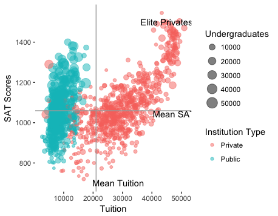

Education
BY Ru Xu
Published December 10, 2017
(skills&tools:R language programming)
Private Schools or Public Schools? Which one is a better choice? When parents talk about which school is the future of their children, public schools and private schools are always treated separately.
The U.S. has a high reputation of education qualification in the world, yet the distribution of schools is unbalanced.
Schools in the US:Counting the number of schools in each state
DATA SOURCE: http://672258.youcanlearnit.net/college.csv
Count and Region: the number of public schools and public schools in each region
DATA SOURCE: http://672258.youcanlearnit.net/college.csv
The United States Education system is provided by public or private institutions. Public schools are required to follow academic standards (i.e., test scores) and curriculum requirements that the government establishes. On the other hand, private schools have more flexibility than public schools which are qualified to design their own curriculums to make sure they are meeting their student goals.
California is the most populous state and the third most extensive by area. Many of the private School benefits are not supported by equity or accessibility aspects for all families in California. Private schools concentrate more on urban areas, with more than 50% of schools in the city. Meanwhile, public schools are focused on the demand of the community’s need. They are located in urban and rural areas in comparison with charter schools where they are mainly located in urban areas.
Public and Private schools in California: the location and the number of schools in California
DATA SOURCE: http://672258.youcanlearnit.net/college.csv
The accessibility of private schools is limited and targeted to a certain population. Private schools have proven to provide a better education quality for those who are privileged enough to be part of such an entity. This problem directly affects parents and their children’s education. However, this issue does not only affect the community but also aggravates a literacy problem for the state of California. Compared to public schools, private schools have shown a better student performance of the SAT score results. This is a boost for parents who want to switch from the traditional public school to the Charter school as they are only looking to provide to their children the best tools to succeed in life.
Control and Tuition: the differences in tuition between public and private schools
DATA SOURCE: http://672258.youcanlearnit.net/college.csv
SAT scores and Tuition: an institution’s average SAT score varies with tuition
DATA SOURCE: http://672258.youcanlearnit.net/college.csv